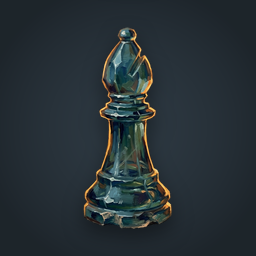
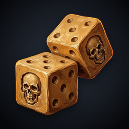
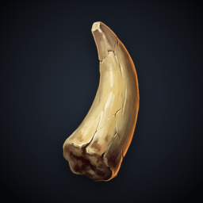
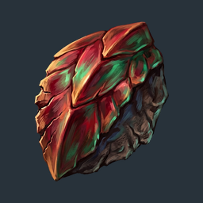
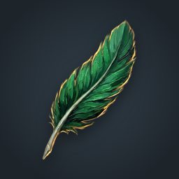

Коллекция в едином стиле «ручная живопись»: 11 безделушек из таблицы d100.
Названия и описания — официальные: английский текст из Player's Handbook (Wizards of the Coast),
русский — из перевода Hobby Games. Картинка каждого предмета сверена с описанием
(пометка «сверено, картинка поправлена» = на иконке убраны детали, которых в описании нет).
Файлы: icons/painted/<id>-<slug>.png — фон коллекции;
icons/painted/transparent/ — прозрачный фон; icons/painted/metadata.csv — таблица описаний;
data/trinkets.json — источник данных.
Кусочек кристалла, слабо светящийся в лунном светеA piece of crystal that faintly glows in the moonlightd100: 02 · icons/painted/02-moonlight-crystal.png · сверено, картинка поправлена

Старая стеклянная шахматная фигураAn old chess piece made from glassd100: 06 · icons/painted/06-glass-chess-piece.png

Пара игральных костей, у обеих вместо шестёрок нарисованы черепаA pair of knucklebone dice, each with a skull symbol on the side that would normally show six pipsd100: 07 · icons/painted/07-skull-knucklebones.png

Зуб неизвестного зверяA tooth from an unknown beastd100: 13 · icons/painted/13-beast-tooth.png

Огромная чешуйка, возможно, драконьяAn enormous scale, perhaps from a dragond100: 14 · icons/painted/14-dragon-scale.png

Ярко-зелёное пероA bright green featherd100: 15 · icons/painted/15-green-feather.png